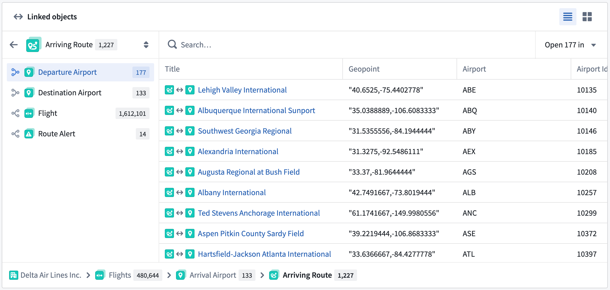
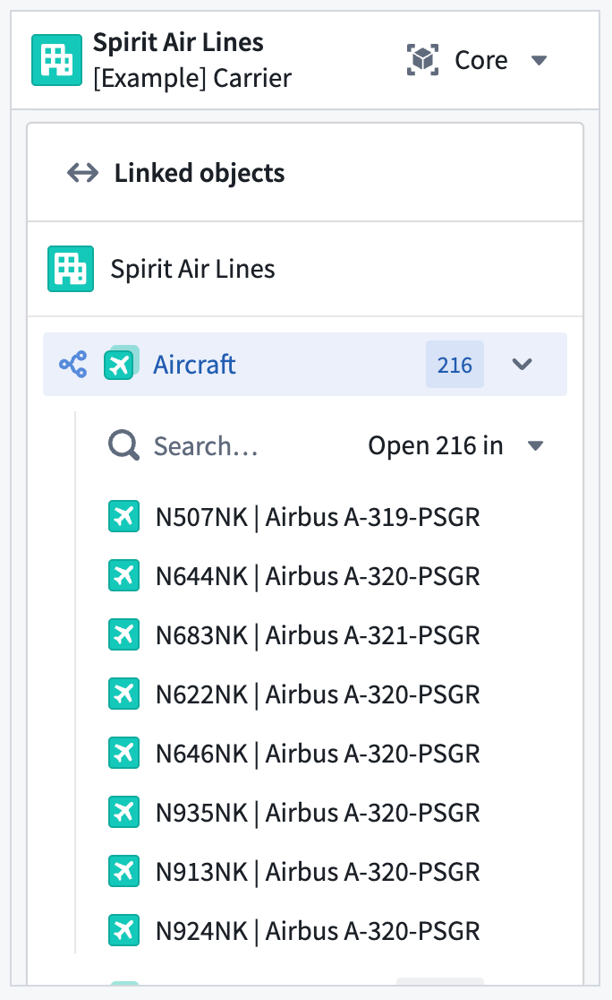

When you create and configure an object type in your Ontology, Foundry automatically creates a standard Object View to provide a standardized representation of all its objects, ensuring other users have a holistic understanding of its schema and links. The standard Object View matches the object type's configuration by spotlighting prominent properties in either a dedicated table or in other visual formats if the property's base type is a time series, media reference, or geospatial property. Normal properties are displayed in a regular table, and hidden properties are not visible.
While standard Object Views are available for all object types, you can create configured views to provide a contextualized and curated Object View experience for any object type based on its function in your Ontology. When you create a configured Object View, Foundry makes it available as the default view for a user; however, users can choose to select the standard view to see object data in its standard format.
Foundry surfaces prominent properties at the top of the standard Object View to provide immediate context about an object's most important information.
Properties marked as prominent receive enhanced visual treatment based on their type:
The Linked objects component enables you to traverse across linked objects directly within the standard Object View.

Use the Linked objects component of a standard Object View to:
You can also interact with all of a standard Object View's functionality in its panel form factor.
